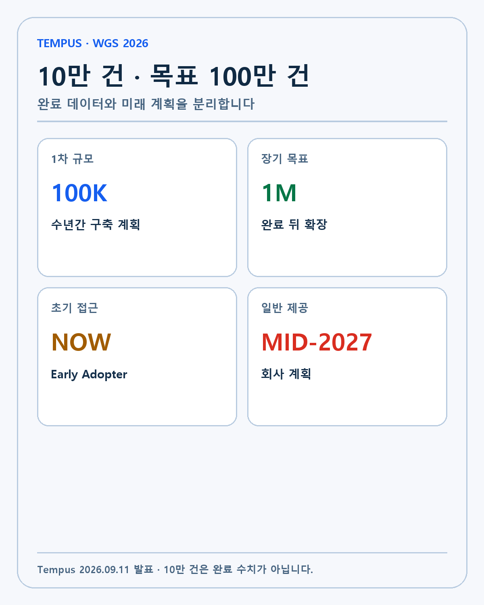
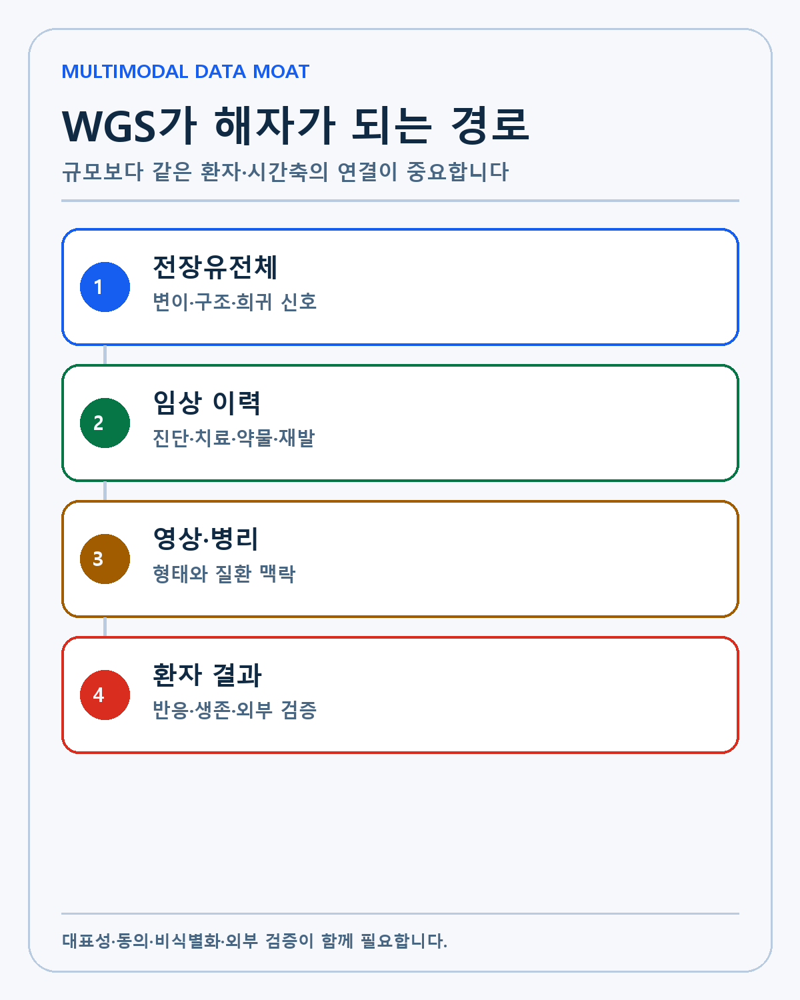
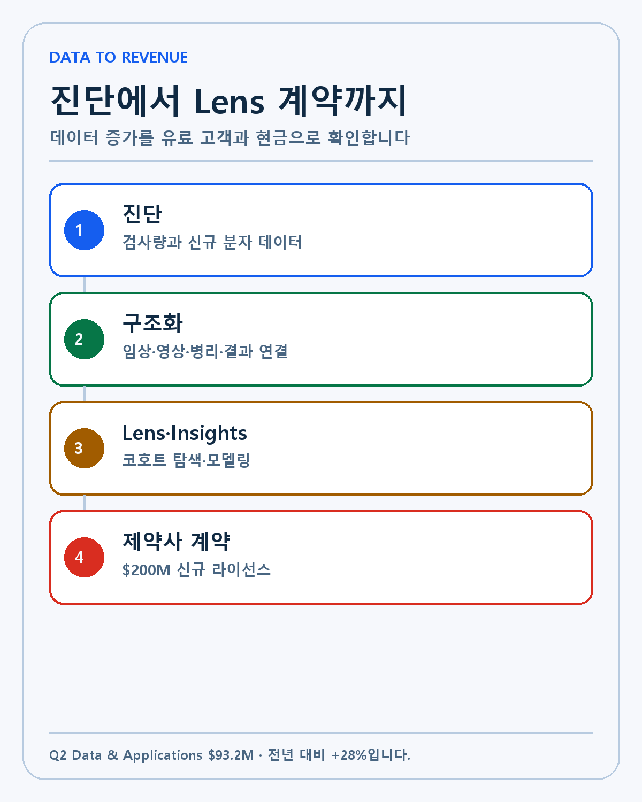
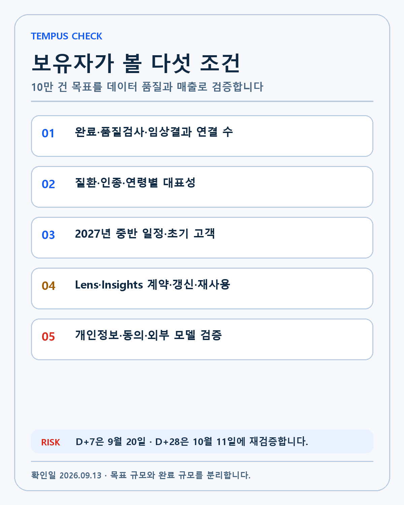

TEMPUS · DEEP RESEARCH
Tempus 10만 전장유전체 전략 분석: 질환·장기 임상결과·Lens가 데이터 해자가 되는 조건
Tempus의 질환별 전장유전체 10만 건 계획을 장기 임상결과·Lens 수익화·대표성·프라이버시·외부 검증으로 분석합니다.
템퍼스가 질환별 전장유전체 10만 건을 장기 임상정보와 연결하는 연구 플랫폼을 구축합니다. 완성 뒤에는 100만 건을 장기 목표로 확장할 계획입니다. 이 발표를 데이터 보유량 경쟁으로만 보면 핵심을 놓칩니다. 어떤 환자가 어떤 치료를 받았고 이후 상태가 어떻게 바뀌었는지 유전체와 연결해야 연구와 신약개발에 사용할 수 있습니다.
투자 질문은 10만 건이 큰가가 아닙니다. 데이터가 실제로 확보됐는지, 질환과 인구집단을 대표하는지, 임상 결과가 정기적으로 갱신되는지, Lens 고객이 비용을 내고 반복 사용하는지를 봐야 합니다. 기술 자산이 데이터 해자로 변하고 다시 매출과 현금흐름으로 이동하는 전체 경로를 분석합니다.
발표에서 확인된 것과 아직 계획인 것
| 항목 | 발표 내용 | 사실의 성격 | 확인할 지표 |
|---|---|---|---|
| 1차 규모 | 전장유전체 10만 건 | 수년간 구축 계획 | 완료·품질검사 수 |
| 장기 규모 | 100만 건 | 장기 목표 | 비용과 파트너 확대 |
| 표본 설계 | 질환별 환자군 | 회사 설계 | 질환·인종·연령 분포 |
| 연결 데이터 | 임상 이력·영상·병리·결과 | 기존 환경과 통합 계획 | 연결률·결측률·갱신주기 |
| 초기 접근 | Early Adopter Program | 제공 시작 | 고객 수·유료 전환 |
| 일반 제공 | 2027년 중반 | 미래 일정 | 일정 준수 |
| 분석 환경 | Tempus Lens | 기존 제품 활용 | 라이선스와 사용량 |

Tempus의 9월 11일 공식 발표는 10만 건을 이미 확보했다고 말하지 않습니다. 수년에 걸쳐 구축할 플랫폼입니다. 초기 데이터는 Early Adopter Program에서 이용할 수 있지만 전체의 일반 제공 시점은 2027년 중반으로 계획돼 있습니다.
Tempus 투자자 자료 PDF는 100만 건 목표, 데이터 통합과 일정이 미래예측 진술임을 분명히 적었습니다. 데이터 규모와 사업 효과가 계획대로 나타난다고 전제해서는 안 됩니다.
유전자 패널과 전장유전체가 답하는 질문
표적 유전자 패널은 알려진 질환 관련 유전자에 분석을 집중합니다. 검사비와 처리시간을 줄이고 임상적으로 검증된 변이를 찾는 데 효율적입니다. 암 치료에서 특정 표적과 약물을 연결할 때 강점이 있습니다.
전장유전체 분석은 단백질을 만드는 영역뿐 아니라 조절 영역과 구조 변이, 희귀한 변이를 더 넓게 관찰합니다. 기존 패널 밖에 있는 신호를 발견할 가능성이 커집니다. 데이터 크기와 계산비용도 늘고 발견된 변이가 실제 질병과 관련됐는지 검증하기가 더 어렵습니다.
한 환자의 전장유전체만으로는 충분하지 않습니다. 같은 변이가 질병군에서 반복되는지, 치료 전후에 어떤 결과가 나왔는지, 다른 인구집단에서도 같은 관계가 나타나는지 확인해야 합니다. Tempus가 장기 임상결과와 질환 중심 표본을 강조하는 이유입니다.
질환 중심 표본과 일반 인구 코호트의 차이
일반 인구 코호트는 질병이 없는 사람을 포함해 유전적 다양성과 질환 위험을 넓게 연구합니다. 질환 중심 데이터는 특정 암이나 희귀질환, 심혈관 환자의 치료 과정과 결과를 깊게 봅니다. 어느 한쪽이 항상 우월한 것은 아닙니다.
Duke OneDukeGen은 10만 명 이상의 보건시스템 환자를 목표로 전장유전체와 전자의무기록, 영상, 설문, 생체시료를 결합합니다. 의료기관 환자를 장기간 추적하면 깊은 표현형과 재접촉이 가능하다는 장점이 있습니다.
이 사례는 Tempus의 주장에 반대 질문을 던집니다. 대규모 병원 환자 데이터와 전장유전체의 결합은 이미 여러 공공·학술 프로그램이 추진하고 있습니다. Tempus가 해자를 만들려면 규모 외에 수집 속도, 데이터 표준화, 상업적 접근성, 모델 배포와 제약사 계약에서 더 높은 실행력을 보여야 합니다.
기존 860만 기록 위에 추가되는 데이터 층

Tempus의 2025년 Form 10-K에 따르면 2025년 말 비식별 환자 기록은 860만 건 이상이었습니다. 임상정보와 유전체가 연결된 기록은 150만 건 이상, 클라우드 데이터는 450페타바이트를 넘었습니다.
기존 규모가 새 전장유전체 프로젝트의 출발점입니다. Tempus는 진료 기록의 비정형 문장, 병리 이미지, 분자검사와 치료 결과를 공통 형식으로 정리합니다. 전장유전체가 추가되면 표적 패널보다 넓은 변이 정보가 같은 환자의 임상 과정과 연결됩니다.
여기에는 중요한 운영 해자가 있습니다. 병원마다 코드와 문서 형식이 다르고 누락 정도도 다릅니다. 데이터 사용 권리와 업데이트 주기도 계약마다 다릅니다. OCR과 자연어처리, 의학 온톨로지와 사람의 품질검수를 조합해 데이터를 사용할 수 있는 형태로 바꾸는 능력이 단순 저장량보다 중요합니다.
멀티모달은 데이터를 많이 붙이는 일이 아닙니다
멀티모달 데이터는 유전체, 임상 기록, 영상과 병리, 약물과 결과를 같은 환자·같은 시간축에서 연결해야 합니다. 환자 식별자가 정확하지 않거나 검사와 치료 시점이 어긋나면 모델이 잘못된 관계를 학습할 수 있습니다.
질병의 진단과 치료 반응은 한 가지 데이터로 설명하기 어렵습니다. 유전체 변이가 같아도 연령, 동반질환, 이전 치료와 환경에 따라 결과가 달라집니다. 멀티모달 연결은 이런 맥락을 모델에 제공하지만 변수와 결측치도 함께 늘립니다.
Tempus가 공개해야 할 것은 총 데이터 수뿐 아니라 연결률, 결측률, 추적 기간과 질환별 샘플 수입니다. 모델 성능도 내부 검증과 독립 외부 검증을 나눠 봐야 합니다.
Lens가 데이터에서 매출로 가는 통로

새 WGS 데이터는 Tempus Lens 안에서 임상 이력, 영상, 병리와 결과를 함께 분석하도록 설계됐습니다. 연구자와 모델 개발자가 데이터를 외부로 옮기지 않고 코호트를 만들고 모델을 학습·검증할 수 있다는 설명입니다.
Lens는 생명과학 고객이 데이터베이스를 탐색하는 소프트웨어입니다. 고객은 질환, 변이, 치료와 결과 조건을 조합해 필요한 환자군을 찾습니다. Tempus는 기본 탐색 기능을 열어 고객이 코호트를 확인하게 하고, 맞춤 데이터·전체 기능·모델링에 비용을 받는 구조를 운영합니다.
전장유전체는 Lens에서 제공할 수 있는 연구 질문을 넓힙니다. 표적 패널에 없던 변이, 약물 반응과 질병 진행의 새로운 관계를 찾으면 신약 타깃과 임상시험 설계에 활용할 수 있습니다. 고객이 같은 데이터 자산을 다른 질문에 반복 사용하면 데이터 한 건의 경제적 가치가 시간이 지나며 높아질 수 있습니다.
Q2 실적에서 확인되는 기존 수익화
| 지표 | 2026년 2분기 | 전년 대비·상태 |
|---|---|---|
| 총매출 | 3억8250만달러 | +22% |
| Diagnostics | 2억8930만달러 | +20% |
| Data and Applications | 9320만달러 | +28% |
| Insights | 별도 금액 미공개 | +36% |
| 신규 Data and Applications 라이선스 | 약 2억달러 | 체결액, 분기매출과 다름 |
| 현금·시장성 증권 | 8억2070만달러 | 2026년 6월 말 |
| 조정 EBITDA | 800만달러 | 양수 |
Tempus Q2 2026 실적 발표는 데이터 사업이 이미 매출을 만든다는 기준선을 제공합니다. Data and Applications 매출은 9320만달러로 28% 증가했고 Insights 성장률은 36%였습니다.
신규 라이선스 약 2억달러는 같은 분기에 인식된 매출이 아닙니다. 계약 기간과 서비스 제공에 따라 나눠서 매출이 됩니다. WGS 프로젝트가 이 계약 규모와 갱신률을 높이는지 확인해야 합니다. 데이터 보유량과 매출을 직접 연결해서는 안 됩니다.
진단 사업과 데이터 사업의 플라이휠
Tempus의 진단 검사는 매출을 만들면서 새로운 분자 데이터를 생성합니다. 병원과의 연결은 임상 기록과 결과를 추가합니다. 구조화·비식별화한 데이터는 Lens와 Insights, 임상시험 매칭과 알고리즘 개발에 사용됩니다.
데이터 사업에서 얻은 수익은 다시 진단 네트워크와 AI 모델 개발에 투자할 수 있습니다. 이 순환이 작동하면 검사량이 늘수록 데이터가 깊어지고 데이터가 좋아질수록 연구 고객과 진단 가치가 커집니다.
플라이휠은 자동으로 작동하지 않습니다. 병원이 데이터를 제공할 권리, 환자 동의와 비식별화, 데이터 품질이 필요합니다. 연구 고객이 얻는 경제적 가치가 계약 비용보다 높아야 갱신됩니다. 진단 매출이 늘어도 데이터 활용권이 제한되면 해자는 약합니다.
개인정보와 유전체 특유의 위험
유전체는 일반 임상 기록보다 재식별 위험이 큽니다. 한 사람뿐 아니라 가족의 유전적 특성도 담습니다. 이름과 주소를 제거해도 다른 정보와 결합하면 개인을 추정할 가능성을 완전히 없애기 어렵습니다.
Tempus Policy Center는 비식별 데이터와 의료 개인정보 법규를 바탕으로 연구 생태계를 지원한다고 설명합니다. 협력기관은 데이터를 제공할 법적 권리를 가져야 하고 임상정보를 정기적으로 보완해야 합니다.
투자자는 규정 준수 여부뿐 아니라 데이터 수집과 사용 범위가 환자 기대와 일치하는지 봐야 합니다. 규제 변화, 보안사고, 계약 분쟁은 데이터 이용 범위와 평판에 영향을 줄 수 있습니다. 프라이버시 보호가 약하면 데이터가 많을수록 위험도 커집니다.
대표성과 편향이 모델 성능을 좌우합니다
10만 건이 특정 암종, 대도시 병원, 특정 인종과 보험집단에 몰리면 다른 환자에게 일반화하기 어렵습니다. 희귀질환은 전체 규모가 커도 질환별 샘플이 작을 수 있습니다. 질환 단계와 치료 이력의 분포도 중요합니다.
모델은 내부 데이터에서 높은 성능을 보여도 새로운 병원과 장비, 다른 인구집단에서 성능이 낮아질 수 있습니다. 외부 검증과 지속 모니터링, 임상 전문가의 검토가 필요합니다. 데이터 규모를 모델 정확도와 같은 뜻으로 쓰지 않겠습니다.
비용 구조와 자금 여력
전장유전체 시퀀싱 비용은 계속 낮아졌지만 표적 패널보다 데이터 생성·저장·연산 비용이 큽니다. 임상정보를 연결하고 품질을 관리하는 인력과 시스템 비용도 듭니다. Tempus는 6월 말 현금·시장성 증권 8억2070만달러를 보유했습니다.
회사는 진단과 데이터 사업에서 매출을 늘리고 조정 EBITDA를 양수로 만들었습니다. 그래도 WGS 구축비와 Personalis 인수, 기존 연구개발을 함께 감당해야 합니다. 현금 소모, 주식보상, 전환사채와 인수 관련 비용을 분리해서 보겠습니다.
경쟁과 차별화 조건
공공 유전체 프로젝트와 대형 병원, 제약사, 진단기업도 유전체와 임상정보를 모읍니다. 클라우드와 AI 업체는 데이터 분석 도구를 제공합니다. Tempus는 데이터 양만으로 경쟁사를 막을 수 없습니다.
차별화는 네 가지에서 나옵니다. 실시간에 가까운 병원 데이터 연결, 진단과 연구를 함께 운영하는 유통망, 데이터를 공통 형식으로 정리하는 기술, 제약사와 임상의가 바로 사용할 수 있는 Lens와 응용제품입니다. 이 네 가지가 함께 작동해야 해자가 됩니다.
강세·기준·약세 시나리오
강세 시나리오에서는 2027년 중반까지 WGS 데이터 확보와 품질검사가 계획대로 진행됩니다. 질환별 대표성과 장기 추적이 확인되고 제약사·AI 연구기관의 유료 계약이 늘어납니다. Data and Applications 성장률과 갱신률이 높아지고 같은 데이터의 재사용이 확대됩니다.
기준 시나리오는 데이터 수집은 진행되지만 임상정보 연결과 외부 검증에 시간이 필요한 경우입니다. 연구 가치는 높아져도 매출 기여가 2027년 이후로 늦어질 수 있습니다. 기존 진단과 Insights 성장이 투자비를 지탱합니다.
약세 시나리오는 시퀀싱·저장·품질관리 비용이 예상보다 크고 파트너 데이터 이용권이 제한되는 경우입니다. 표본 편향과 외부 검증 실패로 모델 활용이 줄고 유료 고객 전환이 약해집니다. 프로젝트 일정이 늦어지면 발표된 규모가 자산가치로 바뀌지 않습니다.
투자 가설 무효화 조건

- 2027년 중반 일반 제공 일정이 지연되고 완료 데이터 수를 공개하지 않습니다.
- 질환·인구집단별 대표성과 임상결과 연결률이 부족합니다.
- Lens·Insights의 신규 계약과 갱신률이 데이터 증가를 따라가지 못합니다.
- 외부 병원 데이터에서 AI 모델 성능이 재현되지 않습니다.
- WGS 구축비와 인수비용 때문에 현금 소모와 희석이 크게 늘어납니다.
보유자로서 보는 우선순위
저는 템퍼스를 AI 바이오 기업이면서 데이터 운영 기업으로 봅니다. 기술 경쟁력은 시퀀싱 장비 하나가 아니라 진단 네트워크, 임상 데이터 연결, 모델 개발과 Lens 유통을 묶는 능력에 있습니다. 이번 WGS 발표는 그 묶음의 깊이를 넓힙니다.
10만 건과 100만 건은 아직 완성된 자산이 아닙니다. 목표 규모보다 완료·품질검사 수, 질환별 구성과 유료 계약을 먼저 보겠습니다. 기술과 데이터 해자가 강화되고 Data and Applications의 매출·현금흐름으로 이어진다면 장기 보유 논리는 더 강해집니다.
다음 확인일은 9월 20일과 10월 11일입니다. D+7에는 Early Adopter와 신규 파트너 공개 여부를 확인합니다. D+28에는 WGS 구축 진행, Lens 계약과 규제·개인정보 업데이트를 봅니다.
이 글은 개인 투자 기록이며 특정 종목의 매수·매도를 권유하지 않습니다. 10만 건과 100만 건, 2027년 일반 제공은 회사 계획이며 실제 일정과 사업 효과는 달라질 수 있습니다. 모든 투자 판단과 책임은 투자자 본인에게 있습니다.
작성 방법
2026년 9월 13일 기준 공식 자료와 공시를 우선하고 실제·회사 전망·시나리오·UNKNOWN을 분리했습니다.
개인 투자 기록이며 특정 종목의 매수·매도를 권유하지 않습니다.